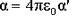
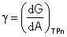
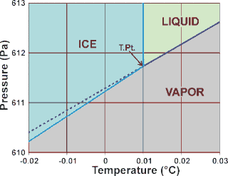
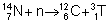
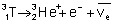
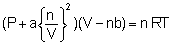
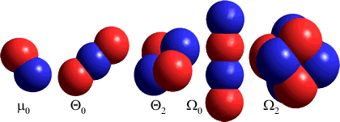

Physical data changes with temperature
Physical data changes with temperature
 Thermodynamic and physical data changes with temperature
Thermodynamic and physical data changes with temperature
 Comparative hydride data
Comparative hydride data
 Ice data
Ice data
 Spectral data
Spectral data
 Seawater
Seawater
 Physicochemical data
Physicochemical data
 Vienna
Standard Mean Ocean Water
Vienna
Standard Mean Ocean Water
 Tritium
Tritium
Property |
Data |
||||||||||||||||||||
|---|---|---|---|---|---|---|---|---|---|---|---|---|---|---|---|---|---|---|---|---|---|
Absorption coefficient, max.( λ > 180 nm) Absorption coefficient, min. |
12,262 cm−1 (at 2935.5 nm wavelength) [130] 8.11 ˣ 10−6 ˣ cm−1 (at 344 nmavelength) at 23 °C [3936] |
||||||||||||||||||||
Acentric factor (ω) |
H2O, 0.344 [3762] |
||||||||||||||||||||
| D2O, 0.364 [3761] | |||||||||||||||||||||
Activity of pure water |
unity |
||||||||||||||||||||
Area, surface covered |
19.0 Å2 ˣ molecule−1 (monolayer [795]) 8.84 Å2 ˣ molecule−1(single molecule; basal plane of hexagonal ice) |
||||||||||||||||||||
Atmospheric content |
19.66 g H2O kg−1, 0.93 mmol L −1 (25 °C, 101.325 kPa, relative humidity = 100) |
||||||||||||||||||||
Atomic density |
100.000 atoms ˣ nm−3 (24.52 °C; three atoms per molecule) |
||||||||||||||||||||
H2O, 0.5 (H-O-H first O-H bond dissociation energy, 492.2145 kJ ˣ mol−1 [350] |
|||||||||||||||||||||
D2O, 0.5 (D-O-D |
|||||||||||||||||||||
Boiling point, 101.325 kPa |
H2O: 100.0 °C c1 , (212 °F), 373.1243 K (99.9743 °C), see [88] |
||||||||||||||||||||
H216O: 99.97 °C [745] |
|||||||||||||||||||||
H217O: 100.08 °C
[745] |
|||||||||||||||||||||
H218O: 100.15 °C
[745] |
|||||||||||||||||||||
HDO: 100.74 °C [745] |
|||||||||||||||||||||
| D216O: 101.40 °C [745] | |||||||||||||||||||||
| D218O: 101.54 °C [745] | |||||||||||||||||||||
HTO: 100.8 °C [745] |
|||||||||||||||||||||
T2O: 101.51 °C [745 ] |
|||||||||||||||||||||
Bulk modulus (= 1/ βS, adiabatic) |
|||||||||||||||||||||
Bulk modulus (K = 1/ βT, isothermal) |
|||||||||||||||||||||
H2O: 7732−18-5 |
|||||||||||||||||||||
| H218O: 14314-42-2 | |||||||||||||||||||||
| HDO: 14940-63-7 | |||||||||||||||||||||
D2O: 7789-20-0 |
|||||||||||||||||||||
| HTO: 13670−17-2 | |||||||||||||||||||||
T2O: 14940-65-9 |
|||||||||||||||||||||
Chemical potential (μ) |
|||||||||||||||||||||
Chemical potential,
temperature coefficient (dμ/dT)
[987] |
H2O (gas):
−188.7 J ˣ mol−1 ˣ K−1 (25 °C) |
||||||||||||||||||||
Chemical potential,
pressure coefficient (dμ/dP)
[987] |
H2O (gas): 24,460 J ˣ mol−1 ˣ MPa −1 (25 °C) |
||||||||||||||||||||
H2O: 2.2973 kJ ˣ cm−3 = 2.2973 GPa (= ( ΔHvap - R T)/ VM) (25 °C) |
|||||||||||||||||||||
| D2O: 2.2164 kJ ˣ cm−3 = 2.164 GPa (25 °C) | |||||||||||||||||||||
| Color | |||||||||||||||||||||
| D2O: colorless | |||||||||||||||||||||
Combining volumes |
O2:H2 = 1:2.002 88 (0 °C, 101.325 kPa) [2466]; if ideal O2:H2 = 1:2 |
||||||||||||||||||||
Compressibility, adiabatic (βS), also called isentropic compressibility |
H2O: 0.4477 GPa −1 (25 °C) [620], 0.5086 GPa −1 (0 °C) 1.158
GPa −1 (-20 °C), 0.2277
GPa −1 (250 K, 400 MPa) [2089] |
||||||||||||||||||||
H2O: 0.2294 |
|||||||||||||||||||||
D2O: 0.2277 |
|||||||||||||||||||||
Compressibility, isothermal (βT), βT = -(1/V)(δV/δP)T = <(ΔV)2>/(kBTV) [1373b ] |
H2O: 0.4599
GPa−1 (25 °C) [ 507] |
||||||||||||||||||||
Compressibility, isothermal (βT), minimum |
|||||||||||||||||||||
Compressibility, change with pressure |
|||||||||||||||||||||
0.05501 μS ˣ cm−1 (25 °C, [737 ]) h, 18.18 MΩ ˣ cm, 1.2 μS ˣ cm−1 (22 °C, degassed; [711]) |
|||||||||||||||||||||
Conductivity, limiting high frequency electrolytic [2171 ] |
|||||||||||||||||||||
Conductivity, specific (of ions, λ) |
|||||||||||||||||||||
| OH− : λOH = 199.24 S ˣ cm2 ˣ mol−1 (25 °C, [737]) | |||||||||||||||||||||
Conductivity, thermal |
H2O: 0.610 W ˣ m−1 ˣ K−1 (25 °C) [IAPWS]; 0.606 502 308 W ˣ m−1 ˣ K−1 (25 °C, 0.1 MPa [ IAPWS] from formula) |
||||||||||||||||||||
Conductivity, thermal; maximum |
|||||||||||||||||||||
Critical point (Tc, Pc, ρc, Vc) |
H2O: 647.096 K, c1 22.064 MPa, 322 kg m−3, 3.1056 cm3 g−1, 55.9 cm3 ˣ mol−1 ( IAPWS) g |
||||||||||||||||||||
D2O: 643.847 K, 21.671 MPa, 356 kg ˣ m−3, 56.3 cm3 ˣ mol−1 ( IAPWS) g |
|||||||||||||||||||||
H2O: no generally accepted value, for example, ≈ 217 K, ≈ 340 MPa, ≈ 1130 kg ˣ m−3 [419]; ≈ 188 K, ≈ 230 MPa, ≈ 1100 kg ˣ m−3 [432]; ≈ 182 K, ≈ 195 MPa [580]; 145−175 K, ≈ 200 MPa [999]; 223 K, ≈ 50 MPa [1685], ≈ 205 K, ≈ 50 MPa [2119], ≥ 210 K, 35-50 MPa [2647], 197 K, 180 MPa [3734]; 220.9 K, 60 MPa [3954], 184 K, 173 MPa [4122]; 215 K [4311]; 190 K 175 MPa [4329]. |
|||||||||||||||||||||
D2O: no generally accepted value, ≈ -78 °C, ≈ 230 MPa, ≈ 1220 kg m−3 [450a]; ≈ -86 °C, ≈ 211 MPa [580]; ≈ -44 °C, ≈ 60 MPa [450b] |
|||||||||||||||||||||
| H2O: 1.8597 K ˣ kg ˣ mol−1 | |||||||||||||||||||||
H218O: 2.0636 K ˣ kg ˣ mol−1 |
|||||||||||||||||||||
| D2O: 2.0224 K ˣ kg ˣ mol−1 | |||||||||||||||||||||
997.05 kg ˣ m−3 [67, 112], 997.047 013 kg ˣ m−3 (25 °C, 0.1 MPa [ IAPWS] from formula) Air saturated water, 997.045 kg ˣ m−3 (25 °C, 0.1 MPa) [4165] |
|||||||||||||||||||||
H2O |
|||||||||||||||||||||
H217O |
1053.12 kg ˣ m−3 [1006] | ||||||||||||||||||||
| H218O | 1109.30 kg ˣ m−3 [1006] | ||||||||||||||||||||
| HDO | 1050.7 kg ˣ m−3 [1857] | ||||||||||||||||||||
D2O |
1104.36
kg ˣ m−3 [620] |
||||||||||||||||||||
D217O |
1159.83 kg ˣ m−3 [1006] |
||||||||||||||||||||
| D218O | 1215.22 kg ˣ m−3 [1006] | ||||||||||||||||||||
| T2O | 1213.28 kg ˣ m−3 [1006] | ||||||||||||||||||||
Density of ice at melting point a |
|||||||||||||||||||||
D2O: 1017.5 kg ˣ m−3 (3.82 °C) |
|||||||||||||||||||||
Density of liquid water at melting point [70] |
H2O: 999.84 kg ˣ m−3 (0 °C, 101.325 kPa) |
||||||||||||||||||||
D2O: 1105.46 kg ˣ m−3 (3.813 °C) |
|||||||||||||||||||||
Density of gas at boiling point |
H2O: 0.5976 kg ˣ m−3 (100 °C, 101.325 kPa) [540] (compare air 0.9461 kg ˣ m−3) D2O: 0.033 043 mol ˣ dm−3 [3761] |
||||||||||||||||||||
Density of iquid water at boiling point |
D2O: 53.039 mol ˣ dm−3 [3761] |
||||||||||||||||||||
Density maximum and molecular volume at the temperature of maximum density [67, 112] |
999.974 95 kg ˣ m−3 e |
3.984 °C |
|||||||||||||||||||
H2O |
999.972 kg ˣ m−3, 29.91 Å 3 mol−1 999.975 kg ˣ m−3 ( IAPWS formula) |
3.984 °C 3.978 °C ( IAPWS) |
|||||||||||||||||||
H218O |
1112.49 kg ˣ m−3, 29.87 Å 3 mol−1 |
4.211 °C |
|||||||||||||||||||
D2O |
1105.3 kg ˣ m−3, 30.07 Å 3 mol−1; 55.221 [3761] |
11.185 °C, 284.748 [3761] |
|||||||||||||||||||
D218O |
1216.88 kg ˣ m−3, 30.06 Å 3 mol−1 |
11.438 °C |
|||||||||||||||||||
T2O |
1215.01 kg ˣ m−3, 30.10 Å 3 mol−1 |
13.403 °C |
|||||||||||||||||||
H2O: 87.9
(0 °C), 78.4 (25 °C; 78.375 218 [ IAPWS ] from formula at 0.1 MPa), 55.6 (100 °C) [63] |
|||||||||||||||||||||
Dielectric, change with pressure |
|||||||||||||||||||||
H2O: 8.14 ˣ 10−12 s (25 °C) [2414] H2O ice Ih: ≈ 2 ˣ 10-5 s
(0 °C) |
|||||||||||||||||||||
D2O: 12.3 ˣ 10−12 s
(20 °C) [8] |
|||||||||||||||||||||
Diffusion coefficient (translational) |
H2O: 0.2299 Å2 ˣ ps−1 (25 °C) [1933 ], 0.0187 Å2 ˣ ps−1 (−31 °C) [62]; 1 Å2 ˣ ps−1 = 10-8 ˣ m2 ˣ s−1 H+ : 0.93 Å2 ˣ ps−1 (25 °C) [4170] H• : 0.7-0.8 Å2 ˣ ps−1 (25 °C) [4170] OH− : 0.53 Å2 ˣ ps−1 (25 °C) [4170] e−: 0.48-0.49 Å2 ˣ ps−1 (25 °C) [4170] OH• : 0.21-0.23 Å2 ˣ ps−1 (25 °C) (cf. Cl− : 0.20 Å2 ˣ ps−1 (25 °C) [4170] |
||||||||||||||||||||
Diffusion coefficient (rotational) |
|||||||||||||||||||||
Diffusion coefficient (ions) |
|||||||||||||||||||||
| OH− : 0.503 Å2 ˣ ps−1 (25 °C) [2116] | |||||||||||||||||||||
Diffusivity,
thermal |
H2O: 14.6 Å2 ˣ ps−1 (25 °C) |
||||||||||||||||||||
D2O: 12.7 Å 2 ˣ ps−1 (25 °C) |
|||||||||||||||||||||
Dimer dissociation energy |
|||||||||||||||||||||
Dipole moment (average), μ z |
H2O: liquid: 2.95±0.2 D (27 °C) [129] H2O: gas: 1.854 98 D ( 6.1875 ˣ 10−30 C ˣ m) [IAPWS], |
||||||||||||||||||||
D2O gas: 1.87 D |
|||||||||||||||||||||
Displacement, root mean square |
≈ 70 µm s−1 [1577a] |
||||||||||||||||||||
Dissociation constant |
5.2 ˣ 10-6 (61 MPa, 2700 °C) [2467] |
||||||||||||||||||||
Dissociation constant, |
H2O: 1.821 ˣ 10−16 mol ˣ L−1 (25 °C) [808] H2O ice Ih: 3.8 ˣ 10−22 mol ˣ L−1 (−10 °C) [1831] |
||||||||||||||||||||
T2O: ≈ 1.1 ˣ 10−17 mol ˣ L−1 (25 °C) [808] |
|||||||||||||||||||||
Dissociation in liquid water, ΔG (25 °C) |
2H2O H-O-H |
||||||||||||||||||||
2D2O |
|||||||||||||||||||||
Dissociation rate (25 °C) |
H2O |
||||||||||||||||||||
Dissociation thermodynamics (25 °C) H2O (liq) |
ΔU° = 59.5 kJ ˣ mol−1 ΔV° = 22.13 cm3 ˣ mol−1 ΔH° = 55.8 kJ ˣ mol−1 ΔG° = 79.9 kJ ˣ mol−1 ΔS° = -80.8 J ˣ K−1 ˣ mol−1 |
||||||||||||||||||||
| H2O: 0.5129 K ˣ kg ˣ mol−1 | |||||||||||||||||||||
D2O: 0.5626 K ˣ kg ˣ mol−1 |
|||||||||||||||||||||
Electrochemical surface potential |
|||||||||||||||||||||
Electron affinity [563] H2O + e− →H2O− + energy |
−16 kJ ˣ mol−1 (-0.17 eV) (25 °C) l ; surface 0.8 ev, bulk 0.1-0.3 ev [3368] |
||||||||||||||||||||
| Elemental composition, w/w a | H2O: 88.8097 % oxygen, 11.1903 % hydrogen |
||||||||||||||||||||
| HDO: 84.1129 % oxygen, 15.8871 % hydrogen | |||||||||||||||||||||
| D2O: 79.8866 % oxygen, 20.1134 % hydrogen | |||||||||||||||||||||
| T2O: 72.6205 % oxygen, 27.3795 % hydrogen | |||||||||||||||||||||
Energy, internal (U) |
liquid: 1.8883 kJ ˣ mol−1 (25 °C, 101.325 kPa) [540 ] |
||||||||||||||||||||
Enthalpy (H = U + PV) |
1.8909 kJ ˣ mol−1 (25 °C) [67] |
||||||||||||||||||||
Enthalpy of formation, ΔHf, |
H2O liquid: -286.629 kJ ˣ mol−1 (0 °C) [2052] |
||||||||||||||||||||
Enthalpy of vaporization (ΔHvap, liquid); the latent heat of vaporization |
H2O: 45.051 kJ ˣ mol−1 (0 °C) [906 ], 40.657 kJ ˣ mol−1 (100 °C) [61]; 46.567 kJ ˣ mol−1 (240 K) [906] |
||||||||||||||||||||
D2O: 45.988 kJ ˣ mol−1 (3.82 °C), 41.521 kJ ˣ mol−1 (101.42 °C), calculated from [1453] |
|||||||||||||||||||||
| T2O: ~45.81 kJ ˣ mol−1 (25 °C) | |||||||||||||||||||||
Enthalpy of fusion; the latent heat of fusion |
6.00678 kJ ˣ mol−1 (0 °C, 101.325 kPa) [1385] |
||||||||||||||||||||
| H218O: 6.029 kJ ˣ mol−1 (0.31 °C) [1710] | |||||||||||||||||||||
| HD16O: 6.227 kJ ˣ mol−1 (2.04 °C) [1710] | |||||||||||||||||||||
Entropy (S) |
liquid, gas, ice Ih; reference state; 0 J ˣ mol−1 ˣ K−1 (exactly, triple point) [2473] | ||||||||||||||||||||
63.45 J ˣ mol−1 ˣ K−1 (Absolute entropy at triple
point) [869] liquid: 367.201 457 J ˣ kg−1 ˣ K−1 (25 °C) (IAPWS) from formula ice Ih: 3.408 J ˣ mol−1 ˣ K−1 (0 K) [1832 ] ≈ RLn(3/2) J ˣ mol−1 ˣ K−1 D216O: gas, 216.602 69 J ˣ mol−1 ˣ K−1 (25 °C) [4124] |
|||||||||||||||||||||
Entropy, molar |
|||||||||||||||||||||
|
|
|||||||||||||||||||||
Entropy of vaporization [8] |
108.951 J ˣ mol−1 ˣ K−1 (100 °C) |
||||||||||||||||||||
Evaporation coefficient (α) n |
in dispute: 1.0 (25 °C) [2326 ]; 0.65 (25 °C) [2327 ]; 0.13 (20 °C) [2325 ] |
||||||||||||||||||||
Expansion coefficient (α), αP = (1/V)(δV/δT)P = <(ΔV)(ΔS)>P/(kB2T) [1373b] |
H2O: 0.000000 °C−1 (3.984 °C), 0.000 253 °C−1 (25 °C) [68] −0.000 059 °C−1 (0 °C), −0.002963 (-20 °C), +0.0004930 (250 K, 400 MPa) [2089] 0.000 053 °C−1 (-20 °C) [717] |
||||||||||||||||||||
D2O: 0.000 1722 °C−1 (25 °C) [620] liquid D2O: −0.000 032 °C−1 (3.81 °C) solid D2O: 0.000 139 °C−1 (3.81 °C) |
|||||||||||||||||||||
Fractional dissociation |
0.014 (61 MPa, 2700 °C) [2467] |
||||||||||||||||||||
Fragile to strong liquid transition |
≈ 220 K [1200] |
||||||||||||||||||||
Freezing point, 101.325 kPa 25 °C |
< 0 °C (see also melting point) |
||||||||||||||||||||
| Gas constant (RS) | = R /molar mass = 461.52309 J ˣ kg−1 ˣ K−1 | ||||||||||||||||||||
| Gas constant (R95) | 461.518 05 J ˣ kg−1 ˣ K−1 ( IAPWS) | ||||||||||||||||||||
| kT/Vmolecule ; RT/Vmole | 137.581 MPa (25 °C) | ||||||||||||||||||||
Gibbs energy (G = U - TS + PV), all referenced to triple point |
liquid: -82.157 J ˣ mol−1 (25 °C, 101.325 kPa) [540] liquid: -4561.7537 J ˣ kg−1 (25 °C, 101.325 kPa) (IAPWS) from formula |
||||||||||||||||||||
Gibbs energy (total) |
|||||||||||||||||||||
H2O (liquid):
-237.18 kJ ˣ mol−1 (25 °C) [987] |
|||||||||||||||||||||
| Hardness (Mohs scale) | ice Ih: variable ≈ 2 (0 °C), ≈ 6 (-50 ≈ -78.5 °C) [2097], often reported as = 1.5 |
||||||||||||||||||||
Heat capacity ratio (γ=CP/CV) |
|||||||||||||||||||||
Helmholtz energy (A = U - TS) [540] |
liquid: -83.989 J ˣ mol−1 (25 °C, 101.325 kPa) |
||||||||||||||||||||
Hexadecapole moments [2233] |
γxxxx = -0.46 D ˣ Å3, γyyyy = 1.53 D ˣ Å3, γzzzz = −1.43 D ˣ Å3 (calculated for a single molecule) |
||||||||||||||||||||
Hydrogen bond |
Donor, Σα
1.17 [666]; compare CHCl3, 0.15; CH3OH, 0.43 |
||||||||||||||||||||
| Donor number (DN), 18.0 [456]; compare CH3CN 14.1; CH3OH,
19.0 Acceptor number (AN), 54.8 [456]; compare C6H6 8.2; CH3OH, 41.3 |
|||||||||||||||||||||
| Donor acidity = 1.062; 20 °C [2892] | |||||||||||||||||||||
| Acceptor basicity = 0.025; cf tetramethylguanidine = 1.000; 20 °C [2892] | |||||||||||||||||||||
| Dipolarity = 0.997; cf dimethylsulfoxide = 1.000; 20 °C [2892] | |||||||||||||||||||||
Polarizability; 0.681 cf carbon disulfide = 1.000; 20 °C [2892] |
|||||||||||||||||||||
Hygroscopicity |
liquid; D2O > H2O |
||||||||||||||||||||
Ionic mobility |
|||||||||||||||||||||
| OH−: 20.64 ˣ 10-8 m2 ˣ s−1 ˣ V −1 (25 °C) [2116] | |||||||||||||||||||||
Ionization potential (relative vacuum) H2O + energy → H2O·++ e− |
H2O: gas; 1216 kJ ˣ mol−1 (12.61 eV) [381a]; 101,766.3 cm−1 [2571] 2nd 14.73 ev, 3rd 16.2 ev, 4th 18.0 ev HDO: gas; 101,840.1 cm−1 [2571] |
||||||||||||||||||||
Vertical ionization energy, [3852] |
H2O: liquid; the ion is in the same geometry as the neutral; 11.67 ev |
||||||||||||||||||||
Adiabatic ionization energy, [3852] |
H2O: liquid; the ion is in its lowest energy, with relaxed geometry; 10.12 ev |
||||||||||||||||||||
Joule-Thomson coefficient (25 °C) |
|||||||||||||||||||||
Kw (ion product) |
H2O: 1.012 ˣ 10−14 (25 °C) D2O: 1.352 ˣ 10−15 (25 °C) T2O: ~6 ˣ 10−16 (25 °C) |
||||||||||||||||||||
Lifetime |
≈ 1 ms |
||||||||||||||||||||
Limits of stability for liquid water |
Lowest temperature,
-21.985 °C at 209.9 MPa |
||||||||||||||||||||
D2O: −1.38 |
|||||||||||||||||||||
Magnetic susceptibility [670 ] |
−1.64 ˣ 10−10 m3 ˣ mol−1 (25 °C), −1.63x10−10 m3 ˣ mol−1 (0 °C) |
||||||||||||||||||||
Magnetic susceptibility, dimensionless (χ) |
9.04 ˣ 10-6 (20 °C) [3591 ] |
||||||||||||||||||||
Mass spectrum |
H2O+ (1.0), OH+ (0.32), H+ (0.26), O+ (0.07), O2+ (0.002), H2+ (0.001) (ionization cross sections at 200 eV relative to H2O+, [1456]) |
||||||||||||||||||||
Melting, contraction on, at melting point |
H2O: 1.634 cm3 ˣ mol −1 (0 °C) |
||||||||||||||||||||
D2O: 1.567 cm3 ˣ mol −1 (3.82 °C) |
|||||||||||||||||||||
H2O: 0.00 °C c2, (32 °F), 273.152 519 K ( IAPWS) |
|||||||||||||||||||||
| HDO: 2.04 °C, 275.19 | |||||||||||||||||||||
D2O: 3.82 °C |
|||||||||||||||||||||
T2O: 4.49 °C |
|||||||||||||||||||||
H218O: 273.43 K
[829] |
|||||||||||||||||||||
Melting point, 25 °C |
|||||||||||||||||||||
Melting point, pressure coefficient |
|||||||||||||||||||||
| D2O: -68 mK MPa −1 (3.82 °C) | |||||||||||||||||||||
H2O: 55.508 472 mol ˣ kg−1 |
|||||||||||||||||||||
D2O: 49.931 324 mol ˣ kg−1 |
|||||||||||||||||||||
Molar concentration b |
H2O: 55.345 mol ˣ L−1 (25 °C) |
||||||||||||||||||||
| HOD: 55.244 mol ˣ L−1 (25 °C, but maximum possible is 27.3 mol ˣ L−1) [1857] | |||||||||||||||||||||
D2O: 55.142 mol ˣ L−1 (25 °C) |
|||||||||||||||||||||
Molar
isotopic composition a, m
|
99.7317 % (55.21 M, 25 °C) |
18.010 564 69 g ˣ mol−1 |
|||||||||||||||||||
H217O |
0.037 1884 % (19.51 mM, 25 °C) |
19.014 781 56 g ˣ mol−1 |
|||||||||||||||||||
H218O |
0.199 983 % (99.62 mM, 25 °C) |
20.014 8105 g ˣ mol−1 |
|||||||||||||||||||
HD16O |
0.031 0693 % (16.29 mM, 25 °C) |
19.016 841 43 g ˣ mol−1 |
|||||||||||||||||||
HD17O |
1.15 853 ˣ 10−5 % (5.8 µM, 25 °C) |
20.021 058 31 g ˣ mol−1 |
|||||||||||||||||||
HD18O |
6.23 003 ˣ 10−5 % (29.5 µM, 25 °C) |
21.021 0872 g ˣ mol−1 |
|||||||||||||||||||
D216O |
2.6 ˣ 10−6 % (1.3 µM, 25 °C) |
20.023 118 18 g ˣ mol−1 |
|||||||||||||||||||
| D217O | 9 ˣ 10−10 % (5 nM, 25 °C) | 21.027 335 06 g ˣ mol−1 | |||||||||||||||||||
| D218O | 4.9 ˣ 10−9 % (26 nM, 25 °C) | 22.027 363 96 g ˣ mol−1 | |||||||||||||||||||
HT16O |
4.987 ˣ 10−17 % f |
20.018 788 92 g ˣ mol−1 |
|||||||||||||||||||
| DT16O | 7.7685 ˣ 10−21 % | 21.025 066 g ˣ mol−1 | |||||||||||||||||||
| T216O | 6.235 ˣ 10−34 % f | 22.027 013 16 g ˣ mol−1 | |||||||||||||||||||
| T218O | 1.25 ˣ 10−36 % f | 24.031 258 g ˣ mol−1 | |||||||||||||||||||
Molar mass b |
H2O: 18.015 268 g ˣ mol−1 (compare molar mass of dry air 28.965 46 g ˣ mol−1 [2215]) |
||||||||||||||||||||
D2O: 20.027 508 g ˣ mol−1 (IAPWS) |
|||||||||||||||||||||
Molar volume (gas, STP) |
0.022 199 m3 ˣ mol−1 (0 °C, 101.325 kPa) |
||||||||||||||||||||
Molar volume (liquid) |
see Volume, molar |
||||||||||||||||||||
Molecular dimensions |
O-H bond length (liquid, ab initio), 0.991 Å [90] O-H bond length (liquid, by diffraction), 0.990 Å [1884] O-H bond length (solid ice Ih, -20 °C), 0.985 Å [717] O-H bond length (gas, 0 K, calc.), 0.957 85 Å [836], 0.9765 Å [2441] O-H root mean square amplitude (gas, 0 K, calc.) 0.0690 Å [2441] H H root mean square amplitude (gas, 0 K, calc.) 0.1142 Å [2441] |
||||||||||||||||||||
O···O (liquid, ≈ 20 °C), average 2.81 Å, most probable 2.70 Å [2120] O···O (ice, −16.8 °C), average 2.76 Å, most probable 2.71 Å, [2120] O···O (gas, 100 °C), average 36.85 Å |
|||||||||||||||||||||
Molecular force constants (gas, [2445]) |
|||||||||||||||||||||
Molecular mass |
H2O: b 2.991 5051 ˣ 10-23 g ˣ molecule−1 | ||||||||||||||||||||
H216O: 2.990 7243 ˣ 10-23 g ˣ molecule−1 |
|||||||||||||||||||||
D216O: 3.324 9166
ˣ 10-23 g ˣ molecule−1 |
|||||||||||||||||||||
Moment of inertia (axes through centers of mass) |
H2O: 1.0220 ˣ 10-40 g ˣ cm2 x; 2.9376 ˣ 10-40 g ˣ cm2 y; 1.9187 ˣ 10-40 g cm2 z [8]. The SI unit of moment of inertia is kg ˣ m2 (= 107 g ˣ cm2) |
||||||||||||||||||||
Systematic name for water |
Oxidane ( IUPAC) is not used. The preferred name is 'water' 1H2O is also known as protium oxide, when distinguishing isotopologues |
||||||||||||||||||||
HDO: 'Semiheavy water' D2O: deuterium oxide ('heavy water') |
|||||||||||||||||||||
HTO: tritiated water, also sometimes called 'super heavy water' T2O: tritium oxide ('super heavy water') |
|||||||||||||||||||||
Common 'hoax' name for water |
|||||||||||||||||||||
Neutron scattering data, [2551] |
|||||||||||||||||||||
NMR chemical shift, proton |
H2O liquid:
4.82 ppm HOD gas: 2Δ1H(HOH, HOD) = -0.040 ppm [4034] |
||||||||||||||||||||
NMR chemical shift, 17O |
H2O liquid:
287.5 ppm (300 K, relative to O8+) [886] HOD gas: 1Δ17O(H2O, HOD) = −1.51 ppm [4034] D 2O gas: 1Δ17O(HOD, D2O) = −1.48 ppm [4034] |
||||||||||||||||||||
Nuclear shielding constants (27 °C), [740 ] |
1H σ(l)
25.79 ppm (44.0 ppm parallel to O—H bond; 16.6
ppm perpendicular to O—H bond, [430]);
gas to liquid shift, δ = σ(l) - σ(g)
= -4.26 ppm |
||||||||||||||||||||
NMR spin-spin coupling |
Isolated H217O; 1J(17O,1H) = -78.2 Hz [3412] |
||||||||||||||||||||
Octupole moment, 25 °C [452 ] |
|||||||||||||||||||||
Octupole moment, (alternative) |
linear (Ω0) −1.34 D ˣ Å2; cubic (Ω2) 1.15 D ˣ Å2; SSDQO1 [1731] Ω |
||||||||||||||||||||
| Optical permittivity (ε∞) [296 K, 1563] | H2O: 2.34 | ||||||||||||||||||||
| H218O: 2.28 | |||||||||||||||||||||
| D2O: 2.29 | |||||||||||||||||||||
Packing density (volume, O···O 2.82 Å, 4 °C) |
0.3925 |
||||||||||||||||||||
Oxygen spin-lattice relaxation time |
17O: 6.9 ms ( 25 °C) [2414] |
||||||||||||||||||||
pD |
D2O: 7.43 (25 °C) (based on [70]) |
||||||||||||||||||||
| pHD | HDO: 7.266 (25 °C) | ||||||||||||||||||||
pH |
H2O:
6.9976 (25 °C; [H3O]+=[OH]− = 1.0054x10-7 mol ˣ L−1; [IAPWS]) |
||||||||||||||||||||
HTO:
7.46 (25 °C) [2621] |
|||||||||||||||||||||
Penetration depth, thickness to drop power by 50%, from [130] |
minimum: 565 nm (at λ = 2935.5 nm) maximum: 156.8 m (at λ = 417.5 nm) |
||||||||||||||||||||
H2O: 0.4602 MPa ˣ K−1 (25 °C) |
|||||||||||||||||||||
| D2O: 0.4585 MPa ˣ K−1(25 °C) | |||||||||||||||||||||
| T2O: 0.4580 MPa ˣ K−1 (25 °C) | |||||||||||||||||||||
pKa H2O: (= pKb H2O) = 13.995
(25 °C) [2965] |
|||||||||||||||||||||
| pKa H3O+: (= pKb OH−) = 0.0 (exactly and invariant of temperature) [2967] | |||||||||||||||||||||
| pKa D2O: (= pKb D2O) = 14.869 (25 °C) (based on [70]) | |||||||||||||||||||||
pKa D3O+: (= pKb OD−) = 0.0 (exactly and invariant of temperature) |
|||||||||||||||||||||
H2O: 13.995
(25 °C) [IAPWS] |
|||||||||||||||||||||
D2O: 14.869 (25 °C) [70] |
|||||||||||||||||||||
T2O: 1.352 ˣ 10−15 (25 °C) |
|||||||||||||||||||||
Polarity/dipolarity, π [666] |
1.09 |
||||||||||||||||||||
Polarizability, () |
1.636 ˣ 10-40 F ˣ m2 |
||||||||||||||||||||
1.470 Å3;
1.5284 Å3 x; 1.4146 Å3 y;
1.4679 Å3 z [736] |
|||||||||||||||||||||
Prandtl Number |
H2O: 6.12 (25 °C) |
||||||||||||||||||||
D2O: 7.81 (25 °C) |
|||||||||||||||||||||
Proton spin-lattice relaxation time (25 °C) |
|||||||||||||||||||||
Proton spin-spin relaxation time (25 °C) |
|||||||||||||||||||||
Quadrupole moment, Q, 25 °C |
-4.27 D ˣ Å xx; -7.99 D ˣ Å yy; -5.94 D ˣ Å zz (calc., liquid H2O [453]) |
||||||||||||||||||||
Quadrupole moment (alternative) |
linear (Θ0) 0.28 D ˣ Å; square (Θ2) 2.13 D ˣ Å; SSDQO1 [1731] Ω |
||||||||||||||||||||
2H2O |
|||||||||||||||||||||
H2O: 1.332 86
(25 °C, λ = 589.26 nm)
[310] |
|||||||||||||||||||||
D2O:1.328 28 (20 °C, λ = 589 nm) [795] |
|||||||||||||||||||||
Refractive index, real n and imaginary parts k |
H2O: n 1.306169; k 0.300352153 (25 °C, v, 3404.795 cm−1) [942] |
||||||||||||||||||||
D2O: n 1.342528; k 0.279696327 (25 °C, v, 2503.923 cm−1) [942] |
|||||||||||||||||||||
Resistance, electrical (ρ = 1/ κ ) |
18.18 MΩ ˣ cm (25 °C, pH 6.9976, ultrapure water [737]) h, 0.8 MΩ ˣ cm (22 °C, degassed; [711 ]) |
||||||||||||||||||||
Shear modulus (adiabatic elasticity) |
|||||||||||||||||||||
|
CP = (δH/δT)P = T(δS/δT)P = <(ΔS)2>/kB [1373b] |
H2O: liquid, 75.338 J ˣ mol−1 ˣ K−1; 4.1819 kJ ˣ kg−1 ˣ K−1,e2 4.1696 MJ ˣ m−3 ˣ K−1 (25 °C, 101.325 kPa, calculated from [1154 ]), 4.181 446 18 kJ ˣ kg−1 K−1 (25 °C, 0.1 MPa [IAPWS] from formula) |
||||||||||||||||||||
Specific heat capacity minimum, CP,min |
|||||||||||||||||||||
Specific heat capacity maximum, CP,min |
|||||||||||||||||||||
Specific heat capacity, Cv = (∂U/∂T)v |
H2O: 74.539 J ˣ mol−1 ˣ K−1 (25 °C) [67] |
||||||||||||||||||||
H2O: 1496.7 m ˣ s−1 (25 °C) [620], 1496.699 22 m ˣ s−1 (25 °C, 0.1 MPa [IAPWS] from formula); 'fast' sound ≈ 3200 m ˣ s−1 [1151 ] 1134.6 m ˣ s−1 (-20 °C), 2015.9 m ˣ s−1 (250 K, 400 MPa) [2089] ice Ih: 3837.9
m ˣ s−1 (0 °C) [1812 ] |
|||||||||||||||||||||
D2O: 1399.2 m ˣ s−1 (25 °C) |
|||||||||||||||||||||
Speed of sound, maximum |
H2O: 1555.4 m ˣ s−1 at 74.0 °C, calculated from [921 ] |
||||||||||||||||||||
D2O: 1461.0 m ˣ s−1 at 75.6 °C, calculated from [1454] |
|||||||||||||||||||||
| Standard state of water | unity (exactly, as pure solvent); unit molal (as solute) | ||||||||||||||||||||
Sublimation coefficient n |
ice: 1.0 (<194 K); 0.146 (263 K) [2328 ] |
||||||||||||||||||||
H2O (liquid): 10.4 nm-2 (0 °C) [2302] H2O (ice Ih): 9.7 nm-2 (0 °C) [2302] |
|||||||||||||||||||||
H2O (liquid - gas): 0.14 mJ ˣ m-2 ˣ K−1 (0 °C) [2302] |
|||||||||||||||||||||
H2O (liquid - gas): 114 mJ ˣ m-2 (0 °C) [2302] H2O (ice Ih - liquid): 15 mJ ˣ m-2 (0 °C) [2302] H2O (ice Ih - gas); 140 mJ ˣ m-2 (0 °C) [2302] |
|||||||||||||||||||||
Surface tension (change with pressure) |
|||||||||||||||||||||
Surface tension () also, Surface energy |
H2O (liquid - gas): 0.07198 N ˣ m−1 (25 °C; 71.98 mJ ˣ m-2) [IAPWS] |
||||||||||||||||||||
H2O (ice Ih - liquid, γsl); 0.0396 N ˣ m−1 (0 °C; 0.0396 J ˣ m-2) [2103 ]; 0.0291 N ˣ m−1(0 °C; 29.1 mJ ˣ m-2) [2302 ] |
|||||||||||||||||||||
H2O (ice Ih - gas, γsg); 0.0692 N ˣ m−1 (0 °C; 69.2 mJ ˣ m-2) [2302] |
|||||||||||||||||||||
| HDO: 0.07193 N ˣ m−1 (25 °C; 0.07193 J ˣ m-2) | |||||||||||||||||||||
Surface tension (complex) |
|||||||||||||||||||||
Surface thickness, from ellipsometry |
H2O-air: 0.449 nm (14.5 °C) [2399] |
||||||||||||||||||||
H2O: −33.3 ± 2.8 MPa (20 °C) [2313] ice Ih ; 1 - 2 MPa (-10 °C) |
|||||||||||||||||||||
H2O: 0.01 °C
(273.16 K) d for VSMOW a, 611.654 771 007 894 Pa (IAPWS) from formula,
0.99978 g ˣ cm−3 (liquid) [ 536], 0.00485 kg ˣ m−3 (gas), 0.91668 g ˣ cm−3 (solid, estimated) |
|||||||||||||||||||||
| H216O: 0.0087 °C [565] | |||||||||||||||||||||
H217O: 0.21 °C [745] |
|||||||||||||||||||||
H218O: 0.31 °C
[717 |
|||||||||||||||||||||
HD16O: 2.04 °C [1710] |
|||||||||||||||||||||
D216O: 3.82 °C
[1710] |
|||||||||||||||||||||
D218O: 4.13 °C
[745] |
|||||||||||||||||||||
| HTO: 2.4 °C [745] | |||||||||||||||||||||
a = 0.5536 Pa (m3 mol−1)2; b = 3.049 ˣ 10-5 m3 mol−1 |
|||||||||||||||||||||
Velocity, root mean square |
642.5 m s−1 (gas, 25 °C) [2467] |
||||||||||||||||||||
H2O: 991 cm3 mol−1 (gas, 25 °C, saturated vapor pressure) [2316] |
|||||||||||||||||||||
| D2O: 1089 cm3 mol−1 (gas, 25 °C, saturated vapor pressure) [2316] | |||||||||||||||||||||
H2O: 0.8909
mPa ˣ s (25 °C, 101.325 kPa) 1.0016 mPa ˣ s (20 °C, 101.325 kPa) [IAPWS], 0.889 996 774 mPa ˣ s (25 °C, 0.1 MPa [IAPWS] from formula); |
|||||||||||||||||||||
| H216O: 1.0016 mPa ˣ s (20 °C) [745] | |||||||||||||||||||||
| D216O: 1.2467 mPa ˣ s (20 °C) [745] | |||||||||||||||||||||
H2O: 0.008935 stoke; 0.8935 ˣ 10-6 m2 ˣ s−1 (25 °C) |
|||||||||||||||||||||
D2O: 0.009915 stoke;
0.9915 ˣ 10-6 m2 ˣ s−1 (25 °C) |
|||||||||||||||||||||
Viscosity, bulk (volume viscosity) |
|||||||||||||||||||||
Viscosity, temperature coefficient |
|||||||||||||||||||||
Volume,
molar, 101.325 kPa, VM, |
H2O liquid: 18.0182 cm3 (0 °C) 18.0685 cm3 (25 °C) [1006] H2O liquid: 18.016 cm3 (3.98 °C) solid; 19.66 cm3 (ice Ih, 0 °C); gas; 0.030 143 m3 (100 °C), 0.781 m3 (25 °C, 3.1698 kPa) |
||||||||||||||||||||
H2O: 50.6 Å3 ˣ molecule−1 from the van der Waals gas 'b' constant |
|||||||||||||||||||||
H217O: 18.0556 cm3 (25 °C) [1006] |
|||||||||||||||||||||
H218O: 18.0428 cm3 (25 °C) [1006] |
|||||||||||||||||||||
| HDO: 18.101 cm3 (25 °C) [1857] | |||||||||||||||||||||
D217O: 18.1297 cm3 (25 °C) [1006] |
|||||||||||||||||||||
D218O: 18.1263 cm3 (25 °C) [1006] |
|||||||||||||||||||||
T2O: 18.1549 cm3 (25 °C) [1006] |
|||||||||||||||||||||
Volume, hydrodynamic (H2O)4 |
72 cm3 ˣ mol−1 [2654] |
||||||||||||||||||||
Volume, intrinsic H2O |
|||||||||||||||||||||
Volume, molecular H2O at 101.325 kPa |
29.92 Å3 (0 °C ); 32.53 Å 3 (ice Ih, -20 °C, [717]); 50.05 nm3 (gas, 100 °C) |
||||||||||||||||||||
Volume, H3O+ from crystals |
26.63 Å3 |
||||||||||||||||||||
Volume, OH− from crystals |
32 Å3 |
||||||||||||||||||||
Volume, van der Waals |
14.6 Å3 ˣ molecule−1 (liquid) 50.6 Å3 ˣ molecule−1 (gas, calculated from the Van der Waals gas constants) |
||||||||||||||||||||
Young's modulus |
stiffness = stress/strain; ice Ih ~9.42 GPa (-16 °C, disputed) [also 2943] |
||||||||||||||||||||
H2O: (liquid, 25 °C) 13.9 kJ ˣ mol−1 [2038] |
|||||||||||||||||||||
[ Back to Top  ]
]
a Vienna Standard Mean Ocean Water. It is impossible (or highly expensive) to prepare isotopically-pure H216O, as there is always some isotopologues present, and it would be readily contaminated. So no properties of this material have been reported. Water from different sources has slight differences in physical properties due to differences in their isotopic composition. The Vienna Standard Mean Ocean Water (VSMOW, now VSMOW2) is pure salt-free water used as a standard water material for determining the physical properties of water. Originally, it was made by mixing distilled ocean waters. It contained 99.984 426 atom % 1H, 0.015 574 atom % 2H (D), 1.85 x 10−15 atom % 3H (T; equivalent to about one disintegration min−1 mol−1 water), 99.76206 atom % 16O, 0.037 90 atom % 17O and 0.200 04 atom % 18O , H216O: H217O: H218O: HD16O is approximately 100: 0.04: 0.2: 0.02 [IAPWS]. Standard heavy water (D2O) has the same oxygen isotopic composition but 100% deuterium and molar mass 20.027508 g mol−1 [IAPWS]. With stocks of VSMOW being used up, they have been succeeded as a primary standard by VSMOW2 (~US $10 ml-1), a standardized artificial pure salt-free water isotopic mixture made to deliver the same isotopic concentrations as VSMOW. Two other standard water preparations exist GISP (Greenland Ice Sheet Precipitation, 0.01246 atom % 2H, 0.03313 atom % 17O, 0.1522 atom % 18O) and SLAP (Standard Light Antarctic Precipitation, 0.00905 atom % 2H, 0.02707 atom % 17O, 0.0929 atom % 18O). Standard seawater is different (containing many different salts), and its thermodynamic properties are described elsewhere [1452]. The standard for heavy water [4124] contains 100% D2O with the isotopic composition of oxygen (as D216O, D217O, and D218O) the same as for VSMOW. It should be noted that, although water contains mostly H216O, the concentrations of other isotopologues may well be greater than the solutes of interest in solutions.
The known isotopes of hydrogen and oxygen are 1H, 2H, 3H, 4H, 5H, 6H, 7H, 12O, 13O, 14O, 15O, 16O, 17O, 18O, 19O, 20O, 21O, 22O, 23O, 24O, but only 1H, 2H, 16O, 17O, 18O are stable, the rest being radioactive. Therefore, there are nine stable isotopologues and (theoretically) 355 possible radioactive isotopologues. . If the ortho-/para- magnetic spin state of hydrogen and deuterium are taken into account, the water molecule has 15 different stable forms. [Back]
b Natural isotopic mixture (VSMOW)a [IAPWS]. The density of natural water may change by up to 20 g ˣ m−3 between distillation fractions or on electrolysis; in both cases, the HD18O (or D218O at higher HD18O concentrations) preferentially remaining behind. Freshwater contains less deuterium than ocean water. [Back]
c1 The boiling point of water used to be defined as 100 °C (212 °F) under standard atmospheric pressure (101.325 kPa), but we now use the International Temperature Scale ( ITS-90) where the boiling point is about 99.9743 °C for VSMOW a. The boiling point and critical point on the thermodynamic temperature scale have been estimated at 99.9839 °C and 647.113 K, respectively [469]. [Back]
c2 The melting point of water (cold  hot) used to be defined
as 0 °C (32°F) under standard atmospheric pressure
(101.325 kPa), but we now use the International Temperature
Scale ( ITS-90).
0 °C is now defined as 273.15 K but does not exactly
equal the melting point of water, 273.152 519 K ( IAPWS ). Air-saturated water gives a melting point closer to 0 °C. The freezing
point of water (hot
hot) used to be defined
as 0 °C (32°F) under standard atmospheric pressure
(101.325 kPa), but we now use the International Temperature
Scale ( ITS-90).
0 °C is now defined as 273.15 K but does not exactly
equal the melting point of water, 273.152 519 K ( IAPWS ). Air-saturated water gives a melting point closer to 0 °C. The freezing
point of water (hot cold) is ill-defined as water usually freezes
a few degrees below 0 °C, and the actual temperature is
not reproducible. [Back]
cold) is ill-defined as water usually freezes
a few degrees below 0 °C, and the actual temperature is
not reproducible. [Back]

d The precisely reproducible triple point temperature (T.Pt.) was used (employing Vienna Standard Mean Ocean Water a) to define the kelvin temperature scale (ITS-90; T.Pt. = 273.16 K exactly and the kelvin degree was 1/273.16 of the thermodynamic temperature of the triple point of VSMOW water). The Celsius scale was defined using the T.Pt. = 0.01 °C with 1 °C made identical in size to 1 K. The triple point is the temperature and pressure at which three phases (here liquid water, hexagonal ice, and water vapor) coexist at equilibrium and transform phase with suitable but tiny changes in temperature or pressure. Also shown, as the dashed line, is the vapor pressure of supercooled liquid water [1729].
Since 2019, the kelvin is defined in terms of the Boltzmann constant, the second, the meter, and the kilogram. [934]
1 K = 0.086 173 332 621 4518 meV = 0.695 034 8004 cm1 ( ≡ 8.314 4626 J ˣ mol−1). [Back]
e1 The
gram was once defined as exactly the mass of one cubic
centimeter of water at 4 °C. [Back]
e2 The calorie (small calorie; obsolete unit) was defined as the amount of energy needed to raise the temperature of one gram of water one degree Celsius from 19.5-20.5 °C (≈ 4.182 J) and at one atmosphere pressure. [Back]
f Tritium. Tritium is naturally formed by interactions between cosmic rays (for example, neutrons) and the atmosphere (for example, ), falling to earth as rain (extremely dilute HTO) and having a permanent inventory on Earth of 3.5 kg where its formation (~0.54 g ˣ day−1) equals its radioactive decay [4116]. Tritium (T, 3H, consisting of one proton and two neutrons) has a short half-life of only ~4500 days (12.32 yr) and decays by β-decay (and anti-neutrino, −νe, 3.56 ˣ 1014 Bq ˣ g−1; 9,622 Ci ˣ g−1) to 3He,
 + 18.6 keV
Liquid T2O is corrosive and undergoes self-radiolysis (≈ 2.1 ˣ 1015 decays ˣ s−1 ˣ mol−1 T2O, i.e., ≈ 2.1 PBq ˣ mol−1 T2O). The limit for human acceptability of water containing tritium is 10,000 Bq ˣ L−1 (WHO; less than 1 in 1013 molecules). The radiative doses received from natural tritium contribute less than a thousandth of the natural background radiation and has no health effects. The biological half-life inside the human body is about a week. The β particles (5.7 keV) travel only about 6 μm in water, but the anti-neutrinos (12.9 keV) escape. The actual atom % of radioactive 3H in water varies between about zero, at the bottom of the oceans, to about 10−14 in atmospheric vapor; with a natural abundance of about 5 ˣ 10−15 % HTO (≈ 2 fM, 25 °C), 6 ˣ 10−32 % T2O [2094]. No other radioactive isotopes (for example, 15O or 14O, half-lives 122 s and 71 s respectively) are found naturally in water molecules.
There were peaks in the atmospheric tritium during the later 1950s and early 1960s due to atmospheric nuclear testing releasing 780 kg of tritium. The atmospheric levels are now effectively down to background levels, with the majority of the remaining tritium (~10 kg) spread in the oceans as super-heavy water, HTO. [Back]
g The possible errors are greater than the last significant figures. [Back]
h The conductivity (that is, 1/resistance) value is made up by the addition of the limiting ionic conductivities (infinite dilution) of 349.19 S ˣ cm2 ˣ mol−1and 199.24 S ˣ cm2 ˣ mol−1 for H+ and OH− respectively (25 °C), giving a total conductivity, which at pH=7 gives 548.43 ˣ 10−7 ˣ 10−3 S ˣ cm−1 ≈ 0.055 01 μS ˣ cm−1 [737]. This corresponds to CO2-free but not degassed water [711]. The increased conductivity of degassing may be due to the removal of the nonpolar gas (O2, N2) structuring effects or increased bicarbonate formation [3450]. The conductivities of the D+ and OD− ions from D2O are about 70% and 50% of these values respectively (whether these ratios of 1/√2 and ½ respectively are coincidence or due to the difference in atomic mass and conductivity pathways remains to be determined). [Back]
j Calculated from ΔG° = -RTLn(Kw) where Kw is from above. This calculation assumes that the standard state of the solvent water is its mole fraction (= 1.0). Alternatively, the values may be calculated from ΔG° = Loge(10) ˣ RT(pKw + 2Log10([H2O]), where [H2O] is the molar concentration of H2O or D2O, where the standard state of the solvent water is taken as 1.0 M. This gives values of 99.78 kJ ˣ mol−1 and 104.76 kJ ˣ mol−1 for H2O and D2O respectively. [Back]
k  for n moles, with P (pressure), V (volume), R (gas constant), and T (temperature) and 'a' and 'b' are the empirical vdW constants allowing for non-ideal behavior; 'a' allowing for weak attractive interactions and 'b' arising from the finite volumes of the molecules. [Back]
l Defined as the energy to take a zero kinetic energy gas-phase electron to the bottom of the conduction band of the condensed phase as a delocalized or quasi-free electron [563]. [Back]
m Molar masses vary according to their source due to isotopic fractionation during phase and chemical changes [2022]; the data does not sum to exactly 100% due to rounding errors a. If calculating masses from sums of particles, allowance for the mass-energy conversion is necessary. Some data from spectra.tsu.ru/partfun/. [Back]
n The coefficient (α) is given by the Hertz–Knudsen equation 
where A is the area (m2), N is the number of molecules, t is the time (s), P is water vapor pressure (Pa) (molecules going onto the surface), or the difference in the vapor pressure of the material and the actual vapor pressure present (molecules leaving the surface), M is the molar mass of water (kg mol−1), R is the gas constant (J mol−1 K−1), and T is the temperature (K). For evaporation/sublimation processes, the key factor is the saturation vapor pressure which controls the maximum rate possible (α = 1); ≈ 2 fm day−1 at 100 K, P = ≈ 10 fPa; ≈ 2 pm hr−1 at 120 K, P = ≈ 0.25 nPa; ≈ 1 mm s−1 at 0 °C, P = ≈ 600 Pa. [Back]
x The x-direction lies in the plane of the water molecule with the origin on the oxygen and orthogonal to the H-O-H angle (that is, parallel to the longest dimension of the molecule). [Back]
y The y-direction lies orthogonal to the plane of the water molecule with the origin on the oxygen. [Back]
z The z-direction lies in the plane of the water molecule with the origin on the oxygen and bisecting the H-O-H angle. [Back]
The figure right also shows the planes of symmetry (xz and yz) and the two-fold axis of rotation (C2, z-axis).
The quadrupole moments are centered on the oxygen atom ( qxx= Σi cixi2 where c = charge, x = distance in x-direction, and the summation is over all (i) charges). Note that calculated quadrupole moments for water vary considerably from model to model. No set of values can be considered 'correct' at presen, except when referring to the particular model and method of calculation. Values calculated with different coordinate systems will be different (see [1731]).
The octupole moments are centered on the center of mass (oxxz= Σi cixi2zi where c = charge, x and z = distance in x- and z-directions and the summation is over all (i) charges). Note that calculated octupole moments for water vary considerably from model to model and no set of values can be considered 'correct' at the present time, except when referring to the particular model and method of calculation. Values calculated with different coordinate systems will be different (see [1731]). 
Ω An alternative view of quadrupoles and octupoles [see 1731] involves the linear (Θ0) and square (Θ2) quadrupole and the linear (Ω0) and cubic (Ω2) octupole; shown in order right after the dipole (μ0) in which different charges are shown by color. [Back]
Home | Site Index | Other data | Further data | Important constants and conversion factors | LSBU | Top
This page was established in 2000 and last updated by Martin Chaplin on 5 November, 2021